Foundation · Circuits
Circuits organize channels into groups that share a common theme. Individual circuitry is oriented toward mutation and empowerment. Collective circuitry is oriented toward sharing patterns and experience. Tribal circuitry is oriented toward support, resources, and community bonds. Understanding which circuits are active in your chart reveals broader themes operating through your definition.
A circuit is a group of channels in the Bodygraph that share a common theme and purpose. While each channel has its own specific energy, the circuit it belongs to provides the broader context for how that energy operates. Circuits are the organizational layer between individual channels and the whole Bodygraph.
The 36 channels are organized into three main circuit groups: Individual, Collective, and Tribal. The four Integration channels stand on their own. Each group has sub-circuits that express more specific themes within the broader group.
Understanding your circuitry helps reveal whether your definition is primarily oriented toward mutation and empowerment, sharing and contribution, or support and provision. Most people carry channels from multiple circuit groups, creating a unique blend of these life themes.
| Group | Sub-Circuits | Theme | Channels |
|---|---|---|---|
| Individual | Knowing + Centering | Mutation, empowerment | 11 |
| Collective | Understanding + Sensing | Sharing, contribution | 14 |
| Tribal | Tribal Circuit + Defense | Support, resources | 7 |
| Integration | - | Self-empowerment, survival | 4 |
The Individual circuitry carries the theme of mutation and empowerment. Individual energy is acoustic. It transforms through frequency rather than explanation. People with strong Individual circuitry march to their own beat. Their energy is not primarily oriented toward sharing or support, but toward uniqueness and mutation. In that uniqueness, Individual circuitry can have a transformative effect on the world around it. The Individual circuit group contains two sub-circuits: Knowing and Centering.
The Knowing Circuit carries the theme of individual knowing, insight, and awareness that arise without logical explanation. This is intuitive, mutative energy expressed and recognized in highly individual ways.

The design of energy that initiates and fluctuates, melancholy and mutation through pulse.
The design of moodiness, the emotional wave that provokes spirit and creativity.
The design of stubbornness, finding purpose and meaning through life's challenges.
The design of a keeper of keys, the direction and resources that drive individual purpose.
The design of penetrating awareness, intuitive clarity expressed spontaneously in the now.
The design of a creative role model, individual creative expression that inspires others.
The design of a social being, expressing emotions and feelings through creative articulation.
The design of individuality, translating unique knowing into concepts others can understand.
The design of a thinker, inner knowing that seeks to rationalize unique insights.
The Centering Circuit carries the theme of self-love, direction, and empowered behavior. It is the smallest circuit and is rooted in individual identity, conviction, and the power of being yourself. Rather than focusing on sharing with the collective or supporting the tribe, this circuit is concerned with living from your own nature and empowering others through authentic self-expression and self-directed action.

The design of needing to be first, the competitive spirit that initiates through shock.
The design of following one's convictions, behavior empowered by the Sacral for self-discovery.
The Collective circuitry carries the theme of sharing. Collective energy is designed to be shared with everyone. It is not personal. The Collective shares in two distinct ways: through logical patterns (Understanding) and through experiential cycles (Sensing). Together, these two circuits account for the largest number of channels in the Bodygraph.
The Understanding Circuit carries the theme of patterns and proof. This circuitry processes information by recognizing repeatable patterns, testing them, validating them, and projecting into the future based on what can be proven. It is oriented toward what might work for everyone. Logic is future-focused and concerned with correction, refinement, and improvement.

The design of mental ease mixed with doubt, pressure to question that drives logical inquiry.
The design of an organizational being, opinions formed through recognizing logical patterns.
The design of talent, depth of skill developed through repetitive practice and mastery.
The design of insatiability, the drive to correct and perfect patterns for the vitality of life.
The design of determination, focused energy for attending to details with stillness and discipline.
The design of being in the flow, fixed life rhythms connected to universal timing patterns.
The design of leadership, influencing the direction of the collective for the future.
The Sensing Circuit carries the theme of experience and reflection. Where Logic looks to the future through patterns, Abstract energy processes the past through cycles of experience. This circuitry moves through desire, experience, and reflection, feeling life fully and sharing the wisdom gained. It is always in motion and oriented toward what has been.

The design of mental activity mixed with clarity, making sense of the past through inner visualization.
The design of a searcher, stimulating ideas that share beliefs and experiences through storytelling.
The design of a jack of all trades, seeking new experiences emotionally through the crisis of inexperience.
The design of a witness, listening and reflecting on experience to share as wisdom.
The design of focused energy, the emotional pressure of desire and fantasy that initiates new experience.
The design of balanced development, the pressure to start and the energy to bring experiences to completion.
The design of succeeding where others fail, committing fully to experience and discovering purpose through the body.
The Tribal circuitry carries the theme of support, loyalty, and resources. Tribal energy is fundamentally about making deals. It operates through bargains, agreements, and material bonds. Where Individual energy mutates and Collective energy shares, Tribal energy protects and provides. It is deeply rooted in survival through community, bonds, and material support. The Tribal group contains two sub-circuits: the Tribal Circuit and the Defense Circuit.
The Tribal Circuit is centered around the Heart/Will Center and carries the theme of willpower, material resources, and community bonds. This circuitry drives the tribe's material well-being through deals, contracts, and commitments. The Heart Center's willpower is the engine of this circuit, providing the energy to make promises and keep them.

The design of a materialist, the will to control resources and provide for the community.
The design of being driven, ambition and continuity through tribal transformation and material success.
The design of sensitivity, emotional awareness of tribal needs and the principles of acceptance and rejection.
The design of being a part seeking a whole, the bargain of emotional support in exchange for material provision.
The design of a transmitter, the instinct for recognizing quality and the will to sell it to the tribe.
The Defense Circuit carries the theme of protection, nurturing, and intimacy. Where the Tribal Circuit is about material resources and willpower, the Defense Circuit is about the physical bonds that hold the tribe together, including sexuality, nurturing, and the protective instinct. It is deeply connected to the body's survival mechanisms.

The design focused on reproduction, intimacy, fertility, and the emotional wave of bonding.
The design of custodianship, the instinct to nurture and preserve the values and well-being of the tribe.
The Integration Channels stand apart from the three circuit groups. They are not part of Individual, Collective, or Tribal circuitry. These four channels are focused purely on individual survival and self-empowerment. They connect the Sacral, Spleen, G Center, and Throat in a tightly interconnected cluster oriented toward self-contained survival. Integration energy is the most self-contained circuitry in the Bodygraph.

The design of a human archetype, intuitive survival power operating purely in the moment.
The design where thoughts must become deeds, responsive Sacral power expressed immediately through the Throat.
The design of survival, behavior guided by splenic intuition for physical well-being.
The design of commitment to higher principles, self-expressed behavior in the moment.
The Integration Channels are unique in the Bodygraph because they do not connect to a broader circuit group. They represent a highly self-contained form of survival and empowerment. Integration energy is highly self-contained and focused on immediate survival, empowerment, and responsiveness.
| Circuit | Keyword | Direction | Frequency |
|---|---|---|---|
| Knowing | Empowerment | Inner knowing outward | Acoustic, mutative |
| Centering | Self-love | Identity and direction | Individual rhythm |
| Understanding | Sharing patterns | Future-oriented | Logical, repeatable |
| Sensing | Sharing experience | Past-oriented | Cyclical, emotional |
| Tribal | Willpower | Material provision | Bargains and deals |
| Defense | Protection | Nurturing and intimacy | Physical bonds |
| Integration | Self-empowerment | Self-contained survival | Immediate, present |
Generate your free chart and discover which circuit groups are active in your design. See the broader themes that shape how your energy flows.
Get Pro →